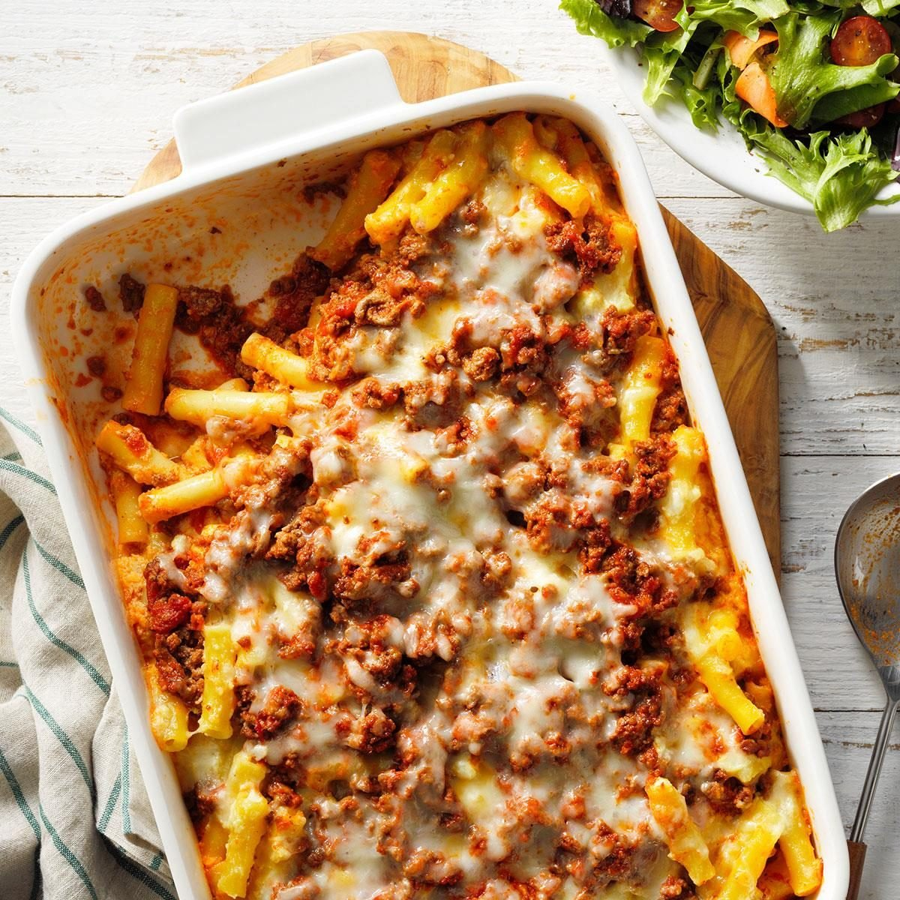

Home
Baked Ziti

Description
Baked ziti is a cozy pasta dish that features layers of meat sauce, tender noodles and creamy ricotta cheese. This freezer-friendly recipe is perfect for feeding a crowd.
Ingredients
- Ziti
- Ground beef
- Spaghetti sauce
- Eggs
- Ricotta
- Mozzarella
- Parmesan
Steps
- Cook the pasta according to package directions.
- Meanwhile, preheat the oven to 350°F. In a large skillet, cook the beef over medium heat until no longer pink and drain. Stir in the spaghetti sauce.
- In a large bowl, combine the eggs, ricotta cheese, 1-1/2 cups mozzarella cheese and the Parmesan cheese. Drain the pasta. Add the pasta to the cheese mixture and stir until blended
- Spoon a third of the meat sauce into a greased 13×9-in. baking dish. Top with half of the pasta mixture. Repeat layers. Top with the remaining meat sauce.
- Cover and bake the ziti for 40 minutes, or until a thermometer reads 160°. Uncover and sprinkle with remaining mozzarella cheese. Bake for 5 to 10 minutes longer, or until the cheese is melted and bubbling. Let stand for 15 minutes before serving.